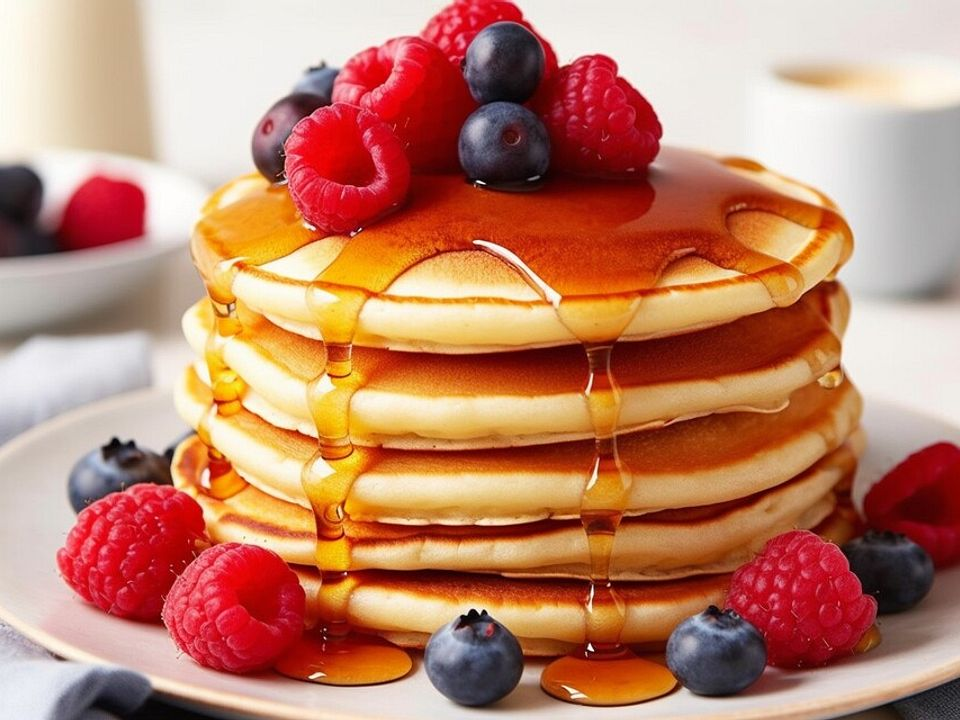

Homepage
American Pancakes

Description
Fluffy, buttery pancakes often served with maple syrup, butter, and crispy bacon. A true breakfast classic!
Ingredients
- 450g/1lb self-raising flour
- 1 tsp baking powder
- ½ tsp ground cinnamon (optional)
- 600ml/20fl oz buttermilk
- 3 large free-range eggs, separated
- 50g/1¾oz butter, melted, plus a small knob for frying
- 1 tsp vanilla extract, or seeds scraped from 1 vanilla pod
- 300g/10½oz blueberries, plus extra to serve
Method
- Put the flour, baking powder, cinnamon, if using, and salt in a large bowl,
mix and make a well in the centre.
- Put the buttermilk, egg yolks, melted butter and vanilla in a large bowl and whisk.
- In a separate, clean glass bowl, whisk the egg whites until stiff peaks form.
- Pour the buttermilk mixture into the well in the flour mixture and whisk.
- Add a large spoonful of the egg whites and fold in with a metal spoon to loosen the batter a little.
- Stir in the rest of the egg whites, preserving as much of the air as possible, until you have a fluffy,
bubbly batter.
- Heat a 20cm/8in frying pan over a medium heat and add a little butter.
- Pour one and a half ladlefuls of batter into the pan.
- When the pancake has browned on the bottom and is firm enough to flip (cooked through beyond halfway),
turn it over quickly and cook for another minute on the other side. Transfer to a plate.
- Repeat with the rest of the batter.